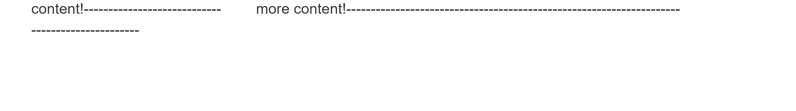
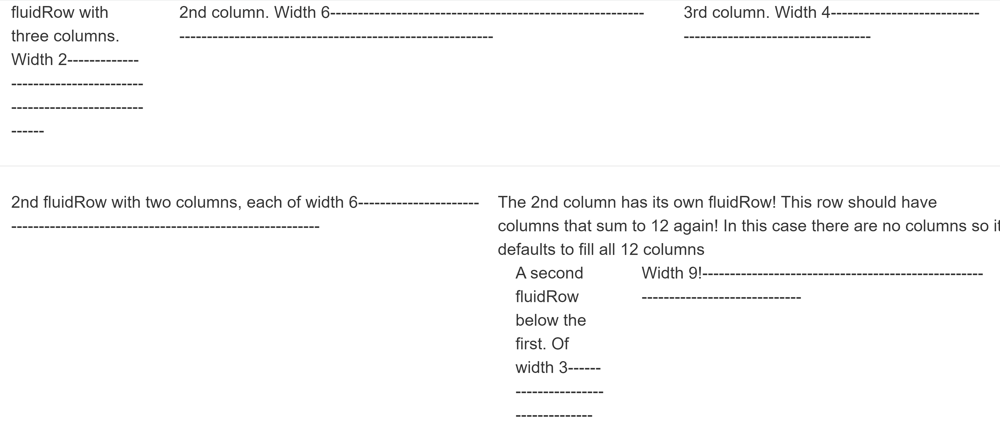
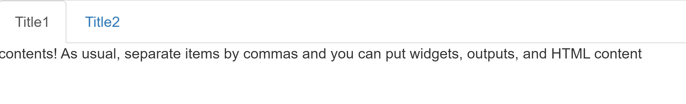
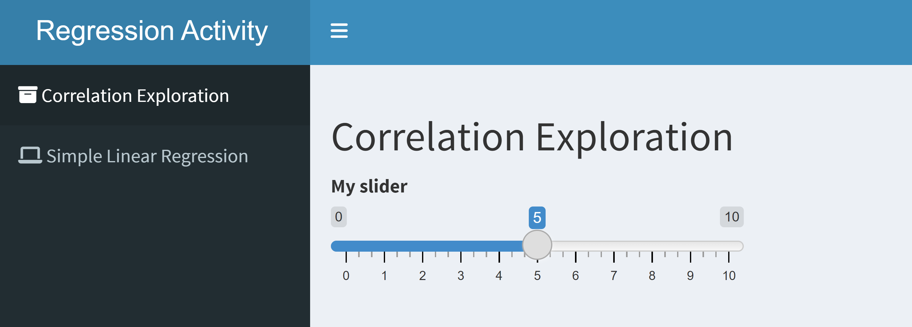
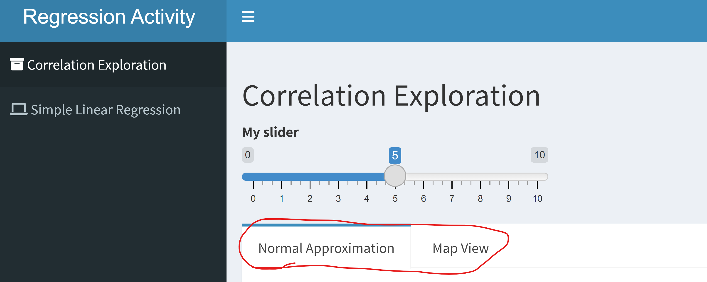

library(shiny)
ui <- fluidPage()Flexible UI Layouts & Dashboards
Hopefully you are seeing the usefulness of shiny apps! We build a user interface to define what the user sees and a server to run our R code. We’ve also learned how to dynamically update our UI! This lesson takes customizing the UI further by looking at how we can create our own layout and also use some packages to change the way our UI is set up.
Custom UI Layout with fluidRow() and column()
When using the base shiny functions to create our UI we generally start with a fluidPage().
shiny uses a popular bootstrap framework for creating its dynamic content. Essentially, you can build rows and each row has a width of 12. We can create a row with fluidRow().
library(shiny)
ui <- fluidPage(
fluidRow()
)You can create columns using the column() function. This takes a width argument and an offset (essentially a buffer)
ui <- fluidPage(
fluidRow(
column(width = 3, offset = 1, "content!--------------------------------------------------"),
column(width = 8, "more content!--------------------------------------------------------------------")
)
)
Again, the columns should sum to 12 in total width for an ‘area’! This setup can allow us to create a custom layout!
library(shiny)
ui <- fluidPage(#using shinyUI so it will show here but you'd save this as ui instead!
fluidRow(
column(2,"fluidRow with three columns. Width 2-------------------------------------------------------------------"),
column(6,"2nd column. Width 6------------------------------------------------------------------------------------------------------------------"),
column(4,"3rd column. Width 4-------------------------------------------------------------")),
fluidRow(tags$hr()),
fluidRow(
column(6,"2nd fluidRow with two columns, each of width 6------------------------------------------------------------------------------"),
column(6,
fluidRow("The 2nd column has its own fluidRow! This row should have columns that sum to 12 again! In this case there are no columns so it defaults to fill all 12 columns"),
fluidRow(
column(3,"A second fluidRow below the first. Of width 3------------------------------------"),
column(9,"Width 9!--------------------------------------------------------------------------------")
))
)
)
Using Tabs
To create tabs that can allow you to easily change what the user sees, we can use shiny::tabsetPanel() with shiny::tabPanel().
tabsetPanel(
tabPanel("Title1", "contents! As usual, separate items by commas and you can put widgets, outputs, and HTML content"),
tabPanel("Title2", "contents")
)
Often we want a larger menu to change between pages. There are a number of other ways to do this as well. We can get a sidebar menu using the shinydashboard package! You’ll likely need to install this package. This package also comes with its own tabItems() and tabItem() functions that create a menu with tabs on it.
library(shinydashboard)Warning: package 'shinydashboard' was built under R version 4.4.3
Attaching package: 'shinydashboard'The following object is masked from 'package:graphics':
boxui <- dashboardPage(
dashboardHeader(title="Regression Activity"),
dashboardSidebar(
sidebarMenu(
menuItem("Correlation Exploration", tabName = "correlation", icon = icon("archive")),
menuItem("Simple Linear Regression", tabName = "slr", icon = icon("laptop"))
)
),
dashboardBody(
tabItems(
tabItem(tabName = "correlation",
titlePanel("Correlation Exploration"),
sliderInput("slidey", "My slider", min = 0, max = 10, value = 5)
),
tabItem(tabName = "slr",
titlePanel("Simple Linear Regression"),
numericInput("number", "My Numeric Input", min = 0, max = 10, value = 5)
)
)
)
)
shinydashboard also comes with functions similar to tabsetPanel() and tabPanel(), which I prefer to use. These functions are tabBox() and tabItem().
fluidRow(
tabBox(
id = "first_plots",
tabPanel(title = "Normal Approximation",
plotOutput("norm_approx")),
tabPanel(title = "Map View",
leaflet::leafletOutput("map_plot")
),
width = 12 #set just like column!
)
)
I like these functions because it makes it easy to do an action when a tab is selected by the user. We can use observeEvent() to look for changes in the tab id.
observeEvent(input$first_plots, {
if(input$first_plots == "Map View"){
...
}
})Recap
We can easily create our own UI layout with fluidPage(), fluidRow(), and column(). These columns must add to 12.
There are tabs that can be used from shiny or from shinydashboard (and other packages!).
Use the table of contents on the left or the arrows at the bottom of this page to navigate to the next learning material!